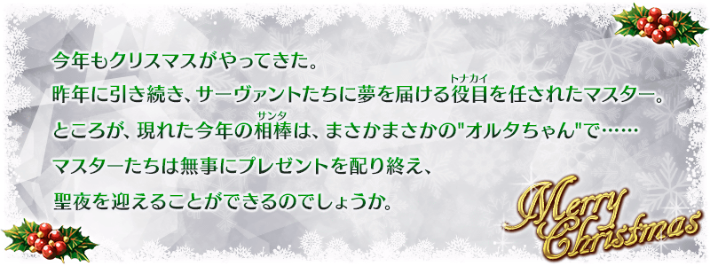
◆活動舉辦期間◆
2017年11月15日(三) 17:00～11月24日(五) 11:59
◆活動概要◆
舉辦期間限定活動「復刻:第二代是Alter醬 ～2016聖誕節～ 輕量版」！
活動期間中，會在管理室(ターミナル)出現活動關卡！
除了能享受故事的主線關卡逐日開放外，通過第一夜後會開放可反覆刷來獲得活動道具的自由關卡。
挑戰活動關卡收集「奇跡襪子」，從貞德・Alter・聖誕・Lily收到聖誕禮物吧！
另外，在通過主線關卡第七夜後，用從禮物陣容入手「白銀交換券」交換的話，貞德・Alter・聖誕・Lily正式加入。
推進活動，取得「★4(SR)貞德・Alter・聖誕・Lily」吧！
※本活動為再調整2016年舉辦的期間限定活動「第二代是Alter醬 ～2016聖誕節～」更容易遊玩的「復刻輕量版活動」。
※活動限定Servant「★4(SR)貞德・Alter・聖誕・Lily」及活動限定概念禮裝與2016年舉辦時同様可以獲得。
◆活動参加條件◆
只限通過「第一特異點 邪龍百年戰爭 奧爾良」的Master才能參加
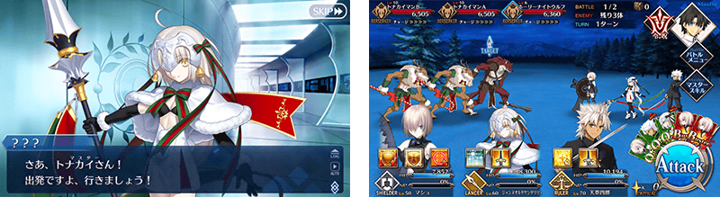
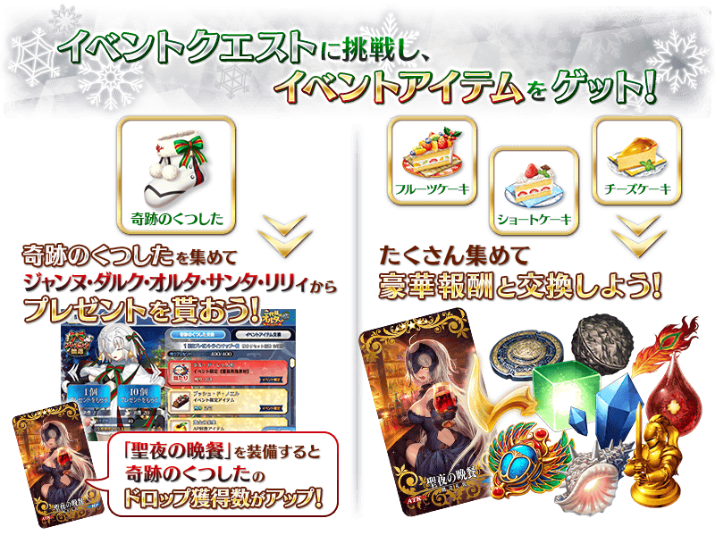
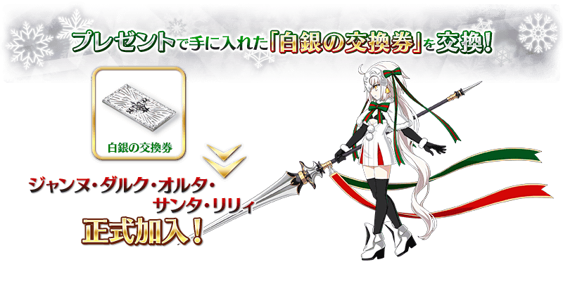
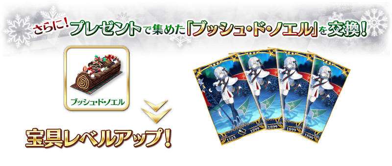
※「白銀的交換券」與貞德・Alter・聖誕・Lily的交換在主線關卡第七夜通過後開放。
※「樹幹蛋糕」與貞德・Alter・聖誕・Lily的交換在貞德・Alter・聖誕・Lily正式加入後開放。
※請注意於2016年舉辦時的期間限定活動「第二代是Alter醬 ～2016聖誕節～」入手的活動道具無法沿用。
能享受故事的主線關卡會逐日開放。
通過主線關卡第一夜的話，會開放可收集活動道具的自由關卡。
| 關卡名 | 時間表 |
|---|---|
| 主線關卡 第一夜 | 11月15日(三) 17:00～ 11月24日(五) 11:59 |
| 主線關卡 第二夜 | 11月15日(三) 23:00～ 11月24日(五) 11:59 |
| 主線關卡 第三夜 | 11月16日(四) 23:00～ 11月24日(五) 11:59 |
| 主線關卡 第四夜 | 11月17日(五) 23:00～ 11月24日(五) 11:59 |
| 主線關卡 第五夜 | 11月18日(六) 23:00～ 11月24日(五) 11:59 |
| 主線關卡 第六夜 | 11月19日(日) 23:00～ 11月24日(五) 11:59 |
| 主線關卡 第七夜 | 11月20日(一) 23:00～ 11月24日(五) 11:59 |
※在2016年舉辦時獲得「聖杯」的情況，於輕量版復刻活動會以「傳承結晶」代替聖杯做為通過報酬。
※11月13日(一) 18:25修正
在活動關卡收集「奇跡襪子」，從貞德・Alter・聖誕・Lily收到聖誕禮物吧！
禮物會在每個陣容放入1個大獎道具。。
抽到大獎道具，執行「禮物重置」的話，會補充新的大獎道具。
有大獎道具陣容有6次份！
收到大獎道具點擊「禮物重置」鍵，補充大獎道具吧！
※本活動由於是輕量版復刻活動，「禮物重置」的執行次數有所上限。請注意執行次數僅有9次。第10次以後無法執行。
※第7次以後不會補充大獎道具及「黃金的果實」「白銀的果實」。入手陣容內的全道具才能進行「禮物重置」。
另外，收集只能在禮物入手的道具「樹幹蛋糕」可用來交換貞德・Alter・聖誕・Lily的寶具等級提升等豪華道具。
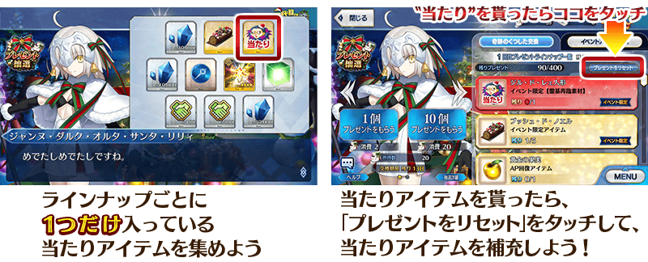
◆禮物陣容◆
|
【大獎道具】 【活動道具】 【技能強化＆靈基再臨素材】 【技能強化素材】 【其他道具】 |
◆超值攻略方法・其1◆
將特定的Servant編入隊伍的話，會提升「水果蛋糕」「草莓蛋糕」「起司蛋糕」的掉落獲得數！
※自11月13日(一) 17:00，在Servant選擇和Servant強化畫面等中，追加「下次活動對象」篩選器。
由於是只顯示於下個舉辦活動活躍Servant的便利功能，敬請活用。
【對象Servant】
| 職階 | 稀有度 | Servant名 |
|---|---|---|
| Archer | ★★★★★ | |
| ★★★★ | ||
| ★★★ | ||
| ★★★ | ||
| Lancer | ★★★★ | |
| ★★ | ||
| Rider | ★★★★ | |
| ★★★★ | ||
| ★★★ | ||
| Caster | ★★★★ | |
| ★★★ | ||
| Assassin | ★★★★★ | |
| ★★★ | ||
| ★★★ | ||
| ★★ | ||
| ★ | ||
| Berserker | ★ | |
| Ruler | ★★★★★ | |
| ★★★★★ | ||
| Avenger | ★★★★★ | |
| Shielder | ★★★ |
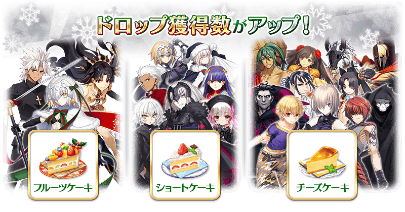
◆超值攻略方法・其2◆
裝備能在活動道具交換入手的活動限定概念禮裝「聖夜の晩餐」的話，會提升活動道具「奇跡襪子」的掉落獲得數。
※請注意於各關卡的道具掉落率並非100％。
◆超值攻略方法・其3◆
裝備期間限定概念禮裝的話，會提升「水果蛋糕」「草莓蛋糕」「起司蛋糕」各自的獲得數。
※請注意於各關卡的道具掉落率並非100％。
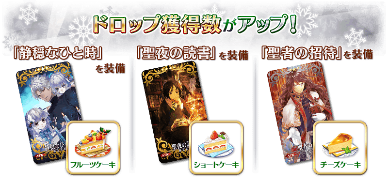
| 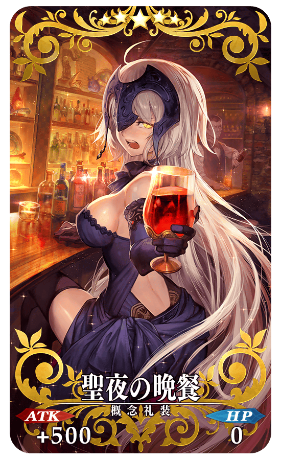 |
★★★★★SSR |
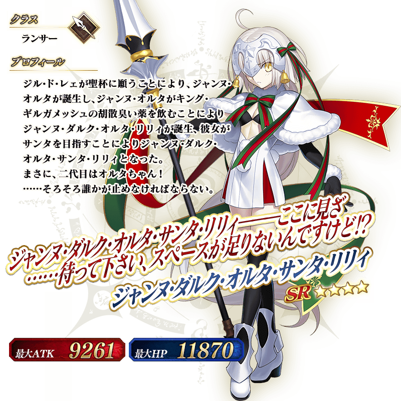
◆關於貞德・Alter・聖誕・Lily的入手、育成◆
貞德・Alter・聖誕・Lily在主線關卡第一夜通過期間限定加入。
另外，在主線關卡第七夜通過後，用禮物第5次的大獎道具「「白銀交換券」在「活動道具交換」交換的話，才會正式加入。
貞德・Alter・聖誕・Lily的靈基再臨素材「吉爾・德・雷玩偶」可在禮物第1～4次的大獎道具入手。
關於寶具等級提升，用可在禮物入手的「樹幹蛋糕」在「活動道具交換」交換貞德・Alter・聖誕・Lily。
※「樹幹蛋糕」與貞德・Alter・聖誕・Lily的交換在貞德・Alter・聖誕・Lily正式加入後開放。
※活動結束後，期間限定加入中的貞德・Alter・聖誕・Lily會脫離，但若有通過主線關卡第七夜，在活動道具交換期間中「白銀交換券」交換的話貞德・Alter・聖誕・Lily會正式加入。
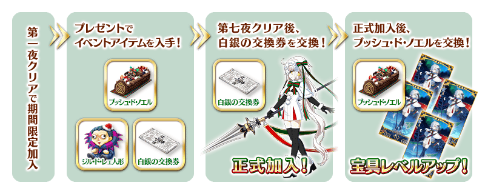
◆靈基再臨◆
使用在活動期間中的禮物外無法入手的「吉爾・德・雷玩偶(ジル･ド･レェ人形)」，重複4次靈基再臨的話，卡面會有所變化！
※貞德・Alter・聖誕・Lilyは不會隨靈基再臨使戰鬥角色的外觀變化。
介紹貞德・Alter・聖誕・Lily的寶具演出！
在Fate/Grand Order官方網站內的公告中，公開「★4(SR)貞德・Alter・聖誕・Lily」的寶具演出。敬請確認。
◆交換方法◆
交換期間:2017年11月15日(三) 17:00～11月29日(三) 11:59
※交換期間結束後「樹幹蛋糕」「水果蛋糕」「草莓蛋糕」「起司蛋糕」「奇跡襪子」會消失。
活動専用道具可自點擊管理室(ターミナル)畫面右上「活動報酬」的「活動道具交換」畫面，交換以下的道具。
※英靈結晶・流星之芙芙ALL★4(HP)及英靈結晶・日輪之芙芙ALL★4(ATK)會在通過「復刻:第二代是Alter醬 ～2016聖誕節～ 輕量版」的主線關卡後開放。
◆能用樹幹蛋糕交換的道具◆
|
【活動限定Servant】 【技能強化＆靈基再臨素材】 【其他道具】 |
◆能用水果蛋糕交換的道具◆
|
【活動限定概念禮裝】 【技能強化＆靈基再臨素材】 【靈基再臨素材】 【其他道具】 |
◆能用草莓蛋糕交換的道具◆
|
【活動限定概念禮裝】 【技能強化＆靈基再臨素材】 【靈基再臨素材】 【其他道具】 |
◆能用起司蛋糕交換的道具◆
|
【活動限定概念禮裝】 【技能強化＆靈基再臨素材】 【其他道具】 |
◆能用奇跡襪子交換的道具◆
|
【活動道具】 |
以通過「復刻:第二代是Alter醬 ～2016聖誕節～ 輕量版」的主線關卡第七夜及「終局特異點」的Master為對象開放高難易度關卡「挑戰關卡」。
挑戰關卡就算在通過後也不會消失，能無數次挑戦，可以變更Servant和概念禮裝的組合後再次挑戰。
※關卡通過報酬、戦利品、Master經驗值、魔術禮裝經驗值、絆點數只限在初次通過時獲得。
◆挑戰關卡參加條件◆
只限通過「復刻:第二代是Alter醬 ～2016聖誕節～ 輕量版」的主線關卡第七夜及「終局特異點」的Master才能參加
◆挑戰關卡初次通過報酬◆
傳承結晶 1個
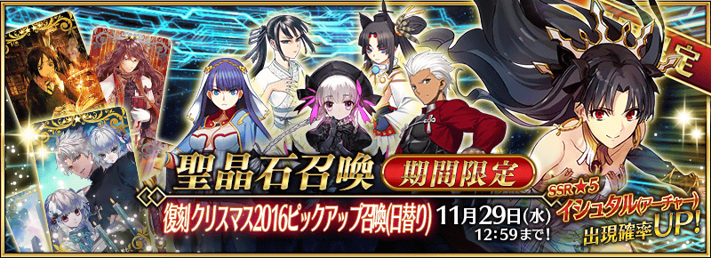
◆「復刻 聖誕節2016Pick Up召喚(每日交替)」期間◆
期間:2017年11月15日(三) 17:00～11月29日(三) 11:59
舉辦期間限定「復刻 聖誕節2016Pick Up召喚(每日交替)」！
「★5(SSR)伊絲塔(Archer)」以期間限定登場！
另外，「★4(SR)Emiya(Archer)」「★4(SR)瑪爾大(Rider)」「★4(SR)童謠」Pick Up！
上述3位Servant以每日交替Pick Up，「★3(R)牛若丸」「★3(R)荊軻」常駐Pick Up。
詳情請在聖晶石召喚畫面左下的召喚詳細確認。
※伊絲塔(Archer)在Pick Up期間結束後不會追加到故事召喚。
※Emiya(Archer)、瑪爾大(Rider)、童謠、牛若丸、荊軻在Pick Up期間結束後也可在故事召喚抽出。
變更在2016年舉辦的「聖誕節2016Pick Up召喚」一部份内容進行復刻。
裝備期間限定概念禮裝「★5(SSR)静穏なひと時」「★4(SR)聖夜の読書」「★3(R)聖者の招待」的話會提升活動専用道具的掉落獲得數。
※「★3(R)聖者の招待」在Pick Up期間中，也能在友情點數召喚獲得。
Pick Up期間中，期間限定Servant、Pick Up Servant、期間限定概念禮裝的出現機率提升！
10次召喚中確定1張★4(SR)以上和確定1位★3(R)以上的Servant！
※確定★4(SR)以上包含Servant和概念禮裝。
※所謂「出現機率提升」意指比同稀有度的Servant及概念禮裝出現機率更高的設定。
| 每日交替Pick Up期間 | 每日交替Pick Up內容 |
|---|---|
| 11月15日(三) 17:00～ 11月18日(六) 22:59 |
伊絲塔(Archer) Emiya(Archer) 瑪爾大(Rider) 童謠 |
| 11月18日(六) 23:00～11月19日(日) 22:59 | 伊絲塔(Archer) 童謠 |
| 11月19日(日) 23:00～11月20日(一) 22:59 | 伊絲塔(Archer) 瑪爾大(Rider) |
| 11月20日(一) 23:00～11月21日(二) 22:59 | 伊絲塔(Archer) Emiya(Archer) |
| 11月21日(二) 23:00～ 11月25日(六) 22:59 |
伊絲塔(Archer) Emiya(Archer) 瑪爾大(Rider) 童謠 |
| 11月25日(六) 23:00～11月26日(日) 22:59 | 伊絲塔(Archer) 童謠 |
| 11月26日(日) 23:00～11月27日(一) 22:59 | 伊絲塔(Archer) 瑪爾大(Rider) |
| 11月27日(一) 23:00～11月28日(二) 22:59 | 伊絲塔(Archer) Emiya(Archer) |
| 11月28日(二) 23:00～11月29日(三) 11:59 | 伊絲塔(Archer) Emiya(Archer) 瑪爾大(Rider) 童謠 |
※請注意會以每日交替變更Pick Up的Servant。
介紹伊絲塔(Archer)的寶具演出！
在Fate/Grand Order官方網站內的公告中，公開了「★5(SSR)伊絲塔(Archer)」的寶具演出。敬請確認。
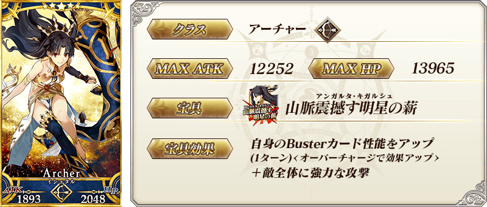


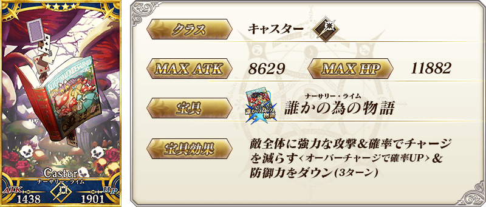
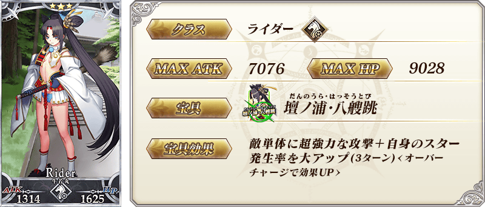

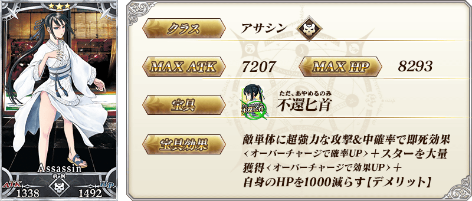
| 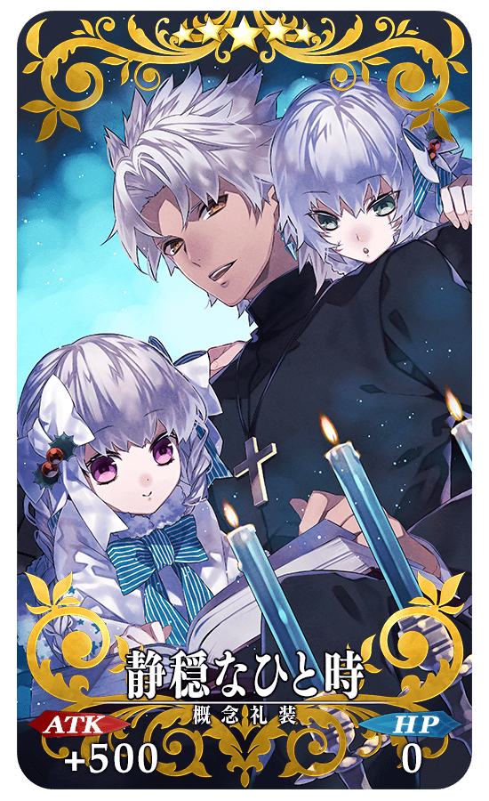 |
★★★★★SSR |
| 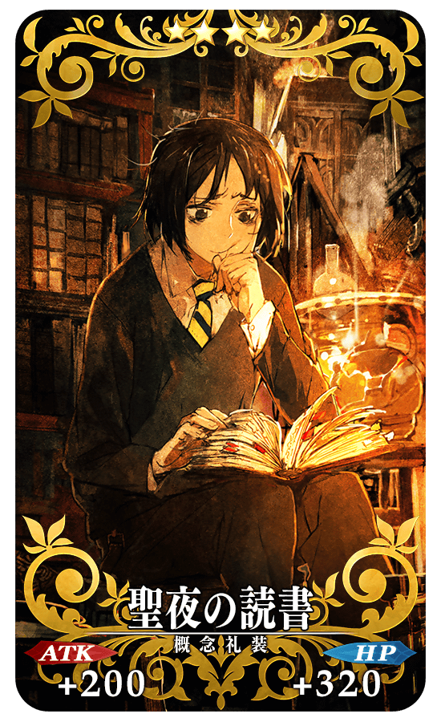 |
★★★★SR |
| 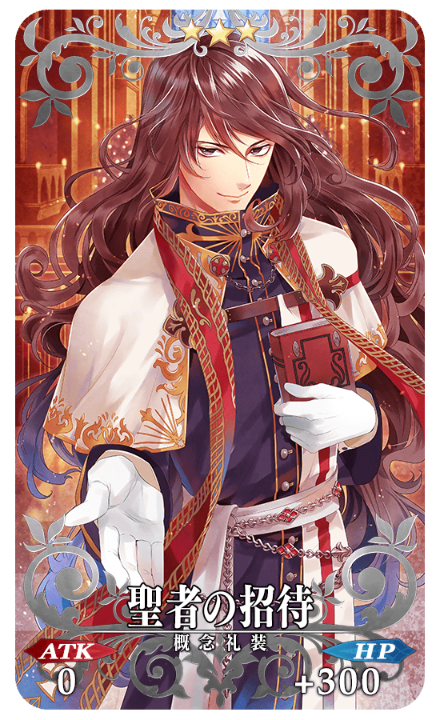 |
★★★R |
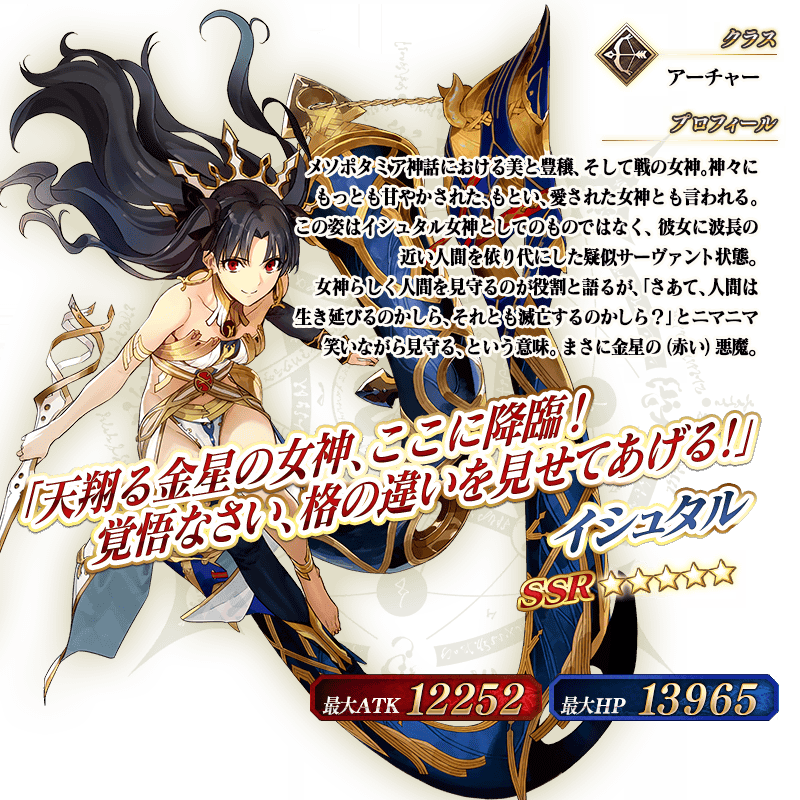